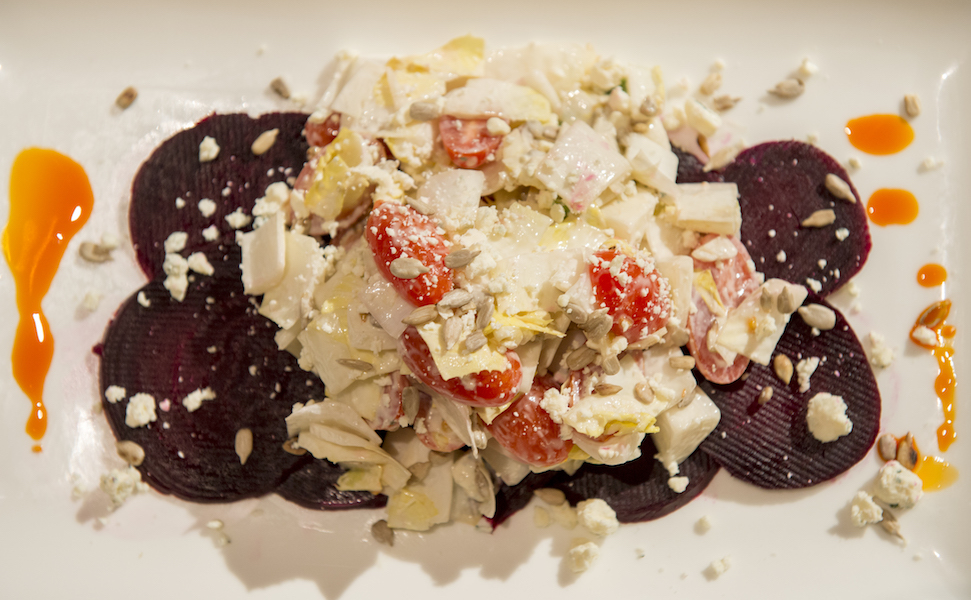
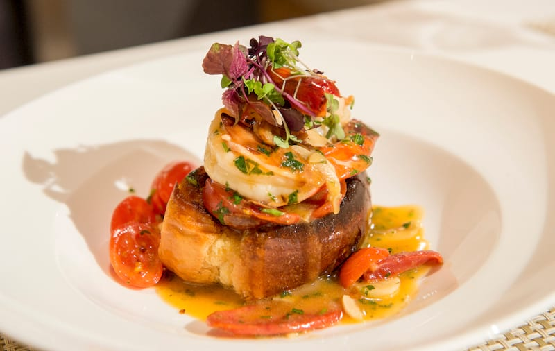

<div class="container">
<!--begin home-menu-section -->
<section class="section-white">

    <!--begin image-overlay -->
    <!--<div class="image-overlay"></div>-->
    <!--end image-overlay -->

        <div class="container">
            <div class="text-center">
               <!--  <span class="comic-text">Yeah Food</span> -->
                <h2 class="section-title">Menu</h2>
            </div>

            <div class="row text-center">
                <script id="-locu-widget" type="text/javascript" src="https://widget.locu.com/widget2/locu.widget.v2.0.js?id=677c811a2e869f0a5214&medium=web"></script>
            </div>
        </div>


</section>

</div>
<!--end home-menu-section -->


<!--begin slideshow section -->
<section class="section-white no-padding-bottom">

    <!--begin container-->
    <div class="container">

        <!--begin row-->
        <div class="row">

            <!--begin col-md-12-->
            <div class="col-md-12 text-center">

                <div class="text-center">

                    <span class="comic-text">Selected Dishes</span>

                    <!-- <h2 class="section-title no-margin">Cooking Recipes</h2> -->

                </div>

            </div>
            <!--end col-md-12-->

        </div>
        <!--end row-->

        <!--begin row-->
        <div class="row">

            <!--begin col-md-12-->
            <div class="col-md-12 text-center">

                <!--begin rev_slider_108_1_wrapper-->
                <div id="rev_slider_108_1_wrapper" class="rev_slider_wrapper fullwidthbanner-container" data-alias="food-carousel80" style="margin:0px auto;padding:0px;margin-top:0px;margin-bottom:0px;">

                    <!-- START REVOLUTION SLIDER 5.0.7 fullwidth mode -->
                    <div id="rev_slider_108_1" class="rev_slider fullwidthabanner" style="display:none;" data-version="5.0.7">

                        <ul>

                            <!-- SLIDE  -->
                            <li data-index="rs-326" data-transition="fade" data-slotamount="7"  data-easein="default" data-easeout="default" data-masterspeed="300"  data-thumb="./images/beet-carpaccio-150x93.jpg"  data-rotate="0"  data-saveperformance="off"  data-title="Beet Carpaccio" data-description="">

                                <!-- MAIN IMAGE -->
                                
                            </li>

                            <!-- SLIDE  -->
                            <li data-index="rs-327" data-transition="fade" data-slotamount="7"  data-easein="default" data-easeout="default" data-masterspeed="300"  data-thumb="./images/shrimp-chorizo-small.jpg"  data-rotate="0"  data-saveperformance="off"  data-title="Shrimp and Chorizo" data-description="">

                                <!-- MAIN IMAGE -->
                                
                            </li>
                        </ul>

                        <div class="tp-bannertimer tp-bottom" style="visibility: hidden !important;"></div>

                    </div>

                </div>
                <!--end rev_slider_108_1_wrapper-->

            </div>
            <!--end col-md-12-->

        </div>
        <!--end row-->

    </div>
    <!--end container-->

</section>
<!--end slideshow section -->
